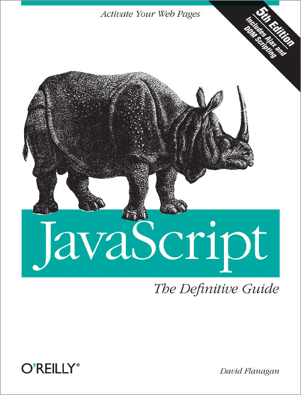

Functions. Part II
Duck typing

@ James Whitcomb Riley
"When I see a bird that walks like a duck and swims like a duck and quacks like a duck, I call that bird a duck."
Duck typing is a style of dynamic typing in which an object's current set of methods and properties determines the valid semantic, rather than its inheritance from a particular class or implementation of a specific interface.
Duck typing
var t = {
"0": "a",
"1": "ab",
"2": "abc",
length: 3
};
[ ].push.call(t, "abcd");
[ ].join.call(t, " -- ");

Scope
Scope
Scope - is a logical boundaries in which a variable (or expression) has its meaning. For example, a global variable, a local variable, etc, which generally reflects a logical range of a variable lifetime.
Major property of a scope — is a method of a variable resolution. There are two conceptual ways: static and dynamic.
Lexical (or Static) Scope
The word “static” relates to ability to determine the scope of an identifier during the parsing stage of a program. That is, if we (by looking on the code) can say before the starting the program, in which scope a variable will be resolved — we deal with a static scope.
Lexical (or Static) Scope
Static structure of a program determines the scope of a variable.
function f() {
var x = 2;
function g() {
alert(x);
}
}
Lexical (Static) Scope
var z = 10;
function foo() {
alert(z);
}
foo();
(function () {
var z = 20;
foo();
})();
Closures
var inner;
function outer(){
var local = 1;
inner = function(){
return local;
};
}
inner();
outer();
inner();
Closures
function doNTimes(n, action) {
function doNTimesRec(x) {
if (x >= 1) {
action(); // (1)
doNTimesRec(x-1);
}
}
doNTimesRec(n);
}
Functions Stay Connected to Their Birth Scopes
function createInc(startValue) {
return function (step) {
startValue += step;
return startValue;
};
}
var inc = createInc(5);
inc(1); // 6
inc(2); // 8
Starting from ES5 ECMAScript use environment terminology
Environment === Scope
Lexical Environment === Static Scope
Lexical environment
it’s an environment record and a reference to the outer environment
Environment record
var x = 10;
function foo() {
var y = 20;
}
Environment record
// environment of the global context
globalEnvironment = {
environmentRecord: {
// built-ins:
Object: function,
Array: function,
// etc ...
// our bindings:
x: 10
},
outer: null // no parent environment
};
// environment of the "foo" function
fooEnvironment = {
environmentRecord: {
arguments: {length: 0, callee: foo},
y: 20
},
outer: globalEnvironment
};
Structure of execution context
ExecutionContext = {
ThisBinding: "this value",
LexicalEnvironment: { ... },
}
[[Scope]]
Back to closures
function sayHello() {
var text = "Hello #1";
var sayAlert = function() { alert(text); }
text = "Hello #2";
sayAlert();
}
Private members
var obj = new function () {
var privateVariable;
function privateFunction(x) {
// privateVariable
}
return {
firstMethod: function (a, b) {
// access to privateVariable
},
secondMethod: function (c) {
// access to privateVariable
// access to privateFunction()
}
};
};
Private Members
function makeProperty(obj, name, predicate) {
var value;
obj["get" + name] = function() { return value; };
obj["set" + name] = function(v) {
if (predicate && !predicate(v)) return;
value = v;
};
}
var obj = {};
makeProperty(obj, "Name", function(x) { return typeof x == "string"; });
obj.setName("Dima");
Assert(obj.getName() == "Dima");
Example
Immediately-Invoked Function Expression (IIFE)
Immediately-Invoked Function Expression
(function () { // open IIFE
// inside IIFE
}()); // close IIFE
or
(function (x, y) {
console.log(x + y);
}(2,4));
why IIFE ?
Avoiding global variable or hiding variables from global scope.
(function () {
var x = 2;
var y = 4;
}());
typeof window.x === “undefined”;
typeof window.y === “undefined”;
Avoiding variable sharing.
function f() {
var result = [];
for (var i=0; i<3; i++) {
var func = function () { return i; };
result.push(func);
}
return result;
}
console.log(f()[0]()); // 3
console.log(f()[1]()); // 3
console.log(f()[2]()); // 3
Avoiding variable sharing.
function f() {
var result = [];
for (var i=0; i<3; i++) {
(function () { // step 1: IIFE
var pos = i; // step 2: copy
var func = function () { return pos; };
result.push(func);
}());
}
return result;
}
console.log(f()[0]()); // 0
console.log(f()[1]()); // 1
console.log(f()[2]()); // 2
Keeping data private to all of a constructor
var StringBuilder = function () { // open IIFE
var KEY_BUFFER = '_StringBuilder_buffer_' + uuid.v4();
function StringBuilder() {
this[KEY_BUFFER] = [];
}
StringBuilder.prototype = { // Omitted: methods accessing this[KEY_BUFFER]
//….
};
return StringBuilder;
}(); // close IIFE
Attaching data to a method
var obj = {
method: function () { // open IIFE
// method-private data
var invocCount = 0;
return function () {
invocCount++;
console.log('Invocation #'+invocCount);
return 'result';
};
}() // close IIFE
};
Example
function makeDIVs() {
function makeDIVsFixed() {
What else i can do with functions?
Returning functions
function setup() {
var count = 0;
return function() {
return ++count;
}
}
var next = setup();
next(); // 1
next(); // 2
Self-overwriting functions
function next() {
var count = 1;
next = function() {
return ++count;
};
return count;
}
next(); // 1
next(); // 2
Lazy function definition
function lazy(){
var result = 2 + 2;
lazy = function() {
return result;
}
return lazy();
}
lazy(); // 4
lazy(); // 4
Chaining
var o = {
v:1,
increment: function() {
this.v++;
return this;
},
add: function (v){
this.v += v;
return this;
},
shout: function() {
alert(this.v);
}
};
o.increment().add(3).shout() // 5
Chaining
//DOM api
var headers = document.getElementsByTagName("h1");
for (var i = 0, l = headers.length; i < l; i++) {
headers[i].className = "title";
headers[i].innerHTML = "Hello World";
}
//jQuery
$("h1").addClass("title").html("Hello World");
Singleton
function Single () {
var instance = this;
//add more to this...
Single = function () {
return instance;
};
}
Decorator
function logArgs(f){
return function(){
console.dir(arguments);
return f.apply(this, arguments);
}
}
function sum(x, y){
return x + y;
}
sum = logArgs(sum);
sum(2, 7);
Memoization
Home task #1
function add(x, y) { return x + y; }
function mul(x, y) { return x * y; }
function make(/*???*/) { /* ??? */ }
var s = make(1)(2)(3)(4)(5);
Assert(s(add) == 15);
Assert(s(mul) == 120);
var x = make(5)(10)(15);
Assert(x(add) == 30);
Assert(x(mul) == 750);
Bjarne Stroustrup:
"There are only two kinds of languages: the ones people complain about and the ones nobody uses."
REFERENCES
|
 |